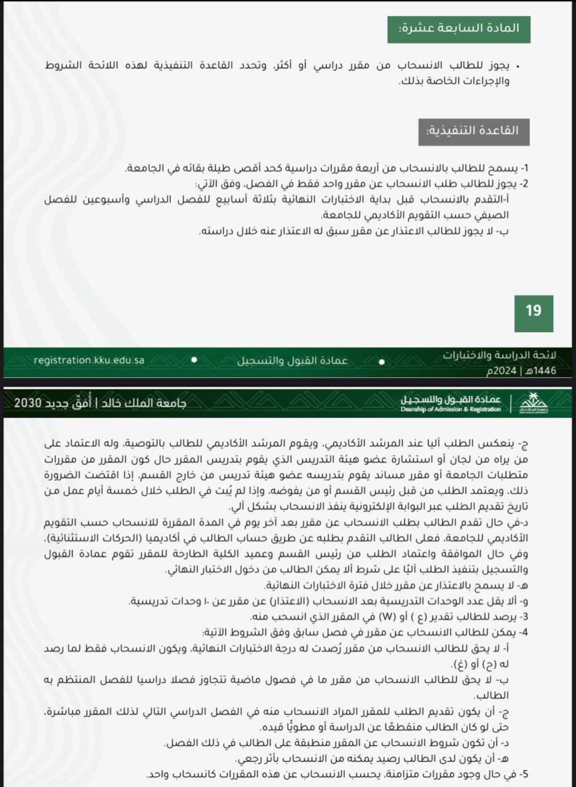

كيفية الاعتذار عن مادة
إليك الشروط والإجراءات اللازمة للاعتذار عن مادة دراسية.

جاري التحميل...
الموقع تطوعي لخدمة الطلاب ولا يمثل جهة رسمية.
إليك الشروط والإجراءات اللازمة للاعتذار عن مادة دراسية.
